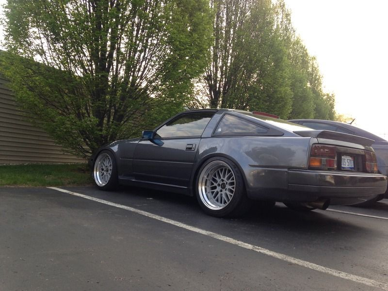
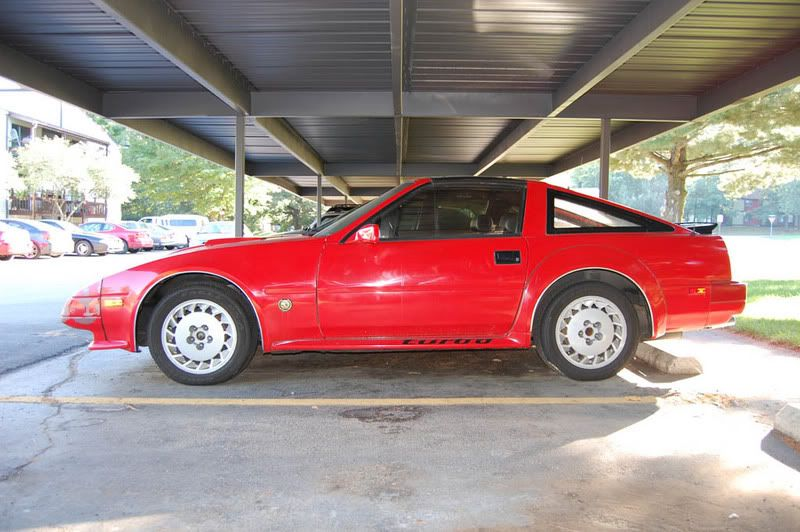

-
I always thought the tinted tail lights debuted in 1986, because I've never seen them on 84s or 85s, but after browsing Z's on craigslist I've seen a bunch of 85 turbos with them on.... Was it common for people to change to the tinted tails, or did late 85 models have them or ?????
If someone could clear this up for me that'd be great, thank you! -
85-86 turbos had them, not 84.
1988 300ZX Turbo, Shiro Special #760
1988 300ZX Turbo Automatic (wife's car)
1991 Hard-body 2WD
http://zccw.org/zccw/?page_id=1215 -
Thanks for clarifying reddzx! -
84AE cars also have them."produce first.talk second." -
^ they do not. I can tell from the last 3 I have dealt with.Damn dirty angels....these cars!
Current Daily Driver - 86 Turbo.
Under the cover - THE BANANA… that needs to be re-energized.
sigpic -
Never seen a AE with the stock black\grey middle bar or smoked lenses. Would be interested to see one. -
Hmm. sorry guys guess I was wrong.
My AE has them, but they must not be OEM.
"produce first.talk second." -
Man, that Z looks sharp. -
I've got them on my AE but they never came on the cars.
2001 Mazda Miata LS
also a 1989 Nissan 240SX
50th AE Build Thread SOLD 2015 -
Originally posted by ShamWow View Post
your 86T has them, and since an 86T is not an AE.... try again.Damn dirty angels....these cars!
Current Daily Driver - 86 Turbo.
Under the cover - THE BANANA… that needs to be re-energized.
sigpic -
Hahaha!"produce first.talk second." -
Originally posted by Axel kain View Post86na - BlueZ
Shiro #366 - Kouki Monster
85t - Mr Tickles -
If 86t's came with MutantZ overfenders, I would be in a junkyard right now with a sawzall in the rain.sigpic

Copyright © 2006–. All rights reserved. Privacy Policy